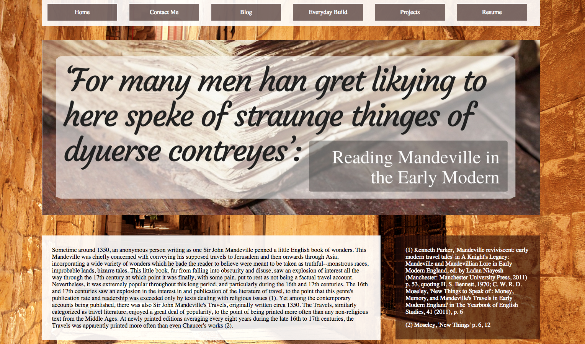

One-page project: Reading Mandeville in the Early Modern Period
March 7, 2016
I daresay I was a typical academic in my time in academia: that is to say, the absentminded kind. So when I graduated with a Masters degree in Renaissance and Early Modern Studies, I hadn't published any papers. (That itself was probably the first signal to me that I wasn't going to be continuing down that path.) But I was and remain pretty proud of the works I had completed. Now I may found a way to sorta publish and at the same time have it be a learning experience on my road towards mastering the skills I need to break into web development.
Here's one I wrote on Sir John Mandeville, a guy who published a wonderful little book of travels through the Middle East which happened to include lots of people with dog-heads, Anthropophagi, ladies and dragons, and any number of other kinds of interesting things. The book was a crazy bestseller for something like 400 years before finally falling into disrepute (because, you know, sometime around 1730 they finally started saying that maybe there was a chance that this wasn't a factual account). The paper I featured on this one-page site project was about how Mandeville's book was being read during the Early Modern period in England (about 1620 - 1680), when there was still plenty of debate on whether this was a factual book or not.
I spent a good 5 hours putting this one-page site together (although most of that time was probably spent in trying to get the citations to show up properly...#AcademiaProblems) and it looks just about exactly as I envisioned it. The CSS is here and the HTML is here.

I got plenty of chances to work on aside tags and positioning things with inline-block,
float: left;, and as many borders and margins as my heart could desire.
But to be honest, this project was almost completely inspired by finally discovering RGBA: specifically, discovering that I could set a background color's opacity. I had tried to do something similar for this site overall a few weeks ago, and found it impossible, so discovering RGBA was extremely exciting.